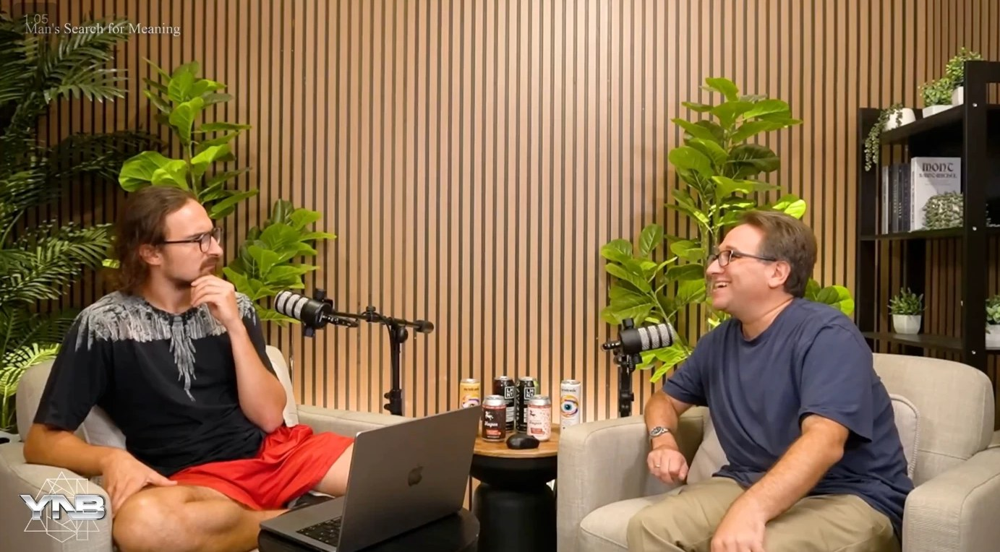
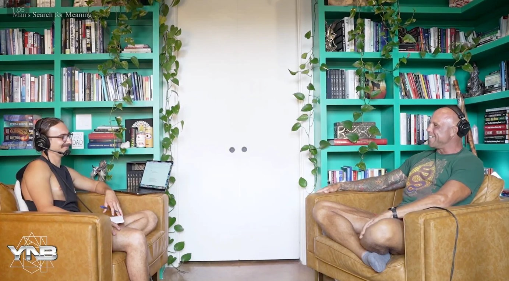
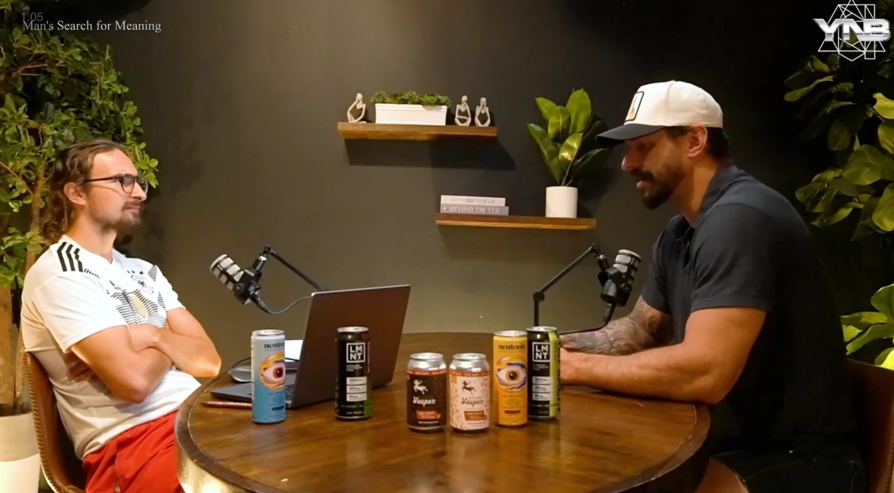

April 2025, AfrikaBurn, Kaggen Camp. Danach war nichts mehr wie vorher…
Bernard bewirbt sich bei Viva con Agua
Kapstadt, 19. November 2026 – Yannick N. Bernard, 28, bewirbt sich auf die ausgeschriebene Position des Senior PR Managers bei Viva con Agua de Sankt Pauli e. V. Drei Tage nach seiner Rückkehr vom AfrikaBurn schloss Bernard seine Agentur, zog nach Kapstadt und ging in ein einjähriges Sabbatical.
Die Bewerbung liegt als Pressemitteilung vor.
„Auf dem Burn begriff ich, dass ich seit Jahren Geschichten erzähle, an die ich selbst nicht mehr glaube…
Dabei hatte ich auf dem Papier vermeintlich alles richtig gemacht: Sieben Jahre lang hab ich das Marketing-Game gespielt. Sechsstellige Copywriting-Agentur. 100+ zufriedene Kunden.
Aber innerlich: leer.“
Yannick N. BernardStatt eines neuen Unternehmens ein Podcast
Während des Sabbaticals baute Bernard seinen eigenen Podcast auf: Man’s Search for Meaning, benannt nach Viktor Frankls Buch, über Menschen, die durchs Feuer gegangen sind. Aufgenommen wird ausschließlich persönlich. Zu Gast waren bisher u. a. …
- sein Mentor, IronMan-Athlet und $100M-Gründer Rob Paddock
- BurningMan-CEO Marian Goodell
- NFL-Star Eben Britton
- Quantenphysiker Prof. Scott Aaronson
- Hollywood-Star David Sutcliffe
- Ex-NPR-Chef Ken Stern
- und im Januar AfrikaBurn-Legende Benjamin Adrion
Um diese Gäste zu gewinnen, flog Bernard 2026 mit einem One-Way-Ticket in die Vereinigten Staaten und schrieb über 400 Kaltakquise-Mails (!) – ohne Reichweite, ohne Etat, ohne Kontakte vor Ort.




„Keiner dieser Leute schuldete mir irgendwas. Sie haben trotzdem ja gesagt. Genau das ist der Job, den ihr ausgeschrieben habt.“
Yannick N. BernardWoran er anknüpfen würde
Wenngleich Bernard kein klassischer Pressesprecher ist, hat er über sieben Jahre genau die Arbeit gemacht, die bei Viva con Agua unter Aufgabe eins steht: die Positionierung von Personenmarken. Er hat Startups zu Marktführern etabliert, globale Communities aufgebaut und mit Namen wie Ungeskriptet, Veit Lindau und Greator gearbeitet. Presse- und PR-Texte, Interviews und Storytelling-Formate sind sein Handwerk; beim Podcast liegen Recherche, Interview, Redaktion und Vermarktung in einer Hand.
„Nach meinem Sabbatical will ich nicht noch ein Business skalieren. Ich will meine Erfahrung nur noch für etwas einsetzen, hinter dem ich menschlich zu hundert Prozent stehe.“
Yannick N. Bernard- Position
- Senior PR Manager*in (m/w/d)
- Gehalt
- 55.000 € brutto p. a., bei der Einordnung ins Gefüge flexibel
- Verfügbar
- [DATUM]
Über Yannick N. Bernard
Yannick N. Bernard, geboren 1998, ist Marketingstratege, Texter und Host des Interview-Podcasts Man’s Search for Meaning. In sieben Jahren als Unternehmer führte er eine eigene Copywriting-Agentur mit Kunden auf drei Kontinenten, arbeitete als strategische rechte Hand direkt an der Seite von Gründern und baute unter anderem Deutschlands führendes Unternehmen für psychedelische Therapie mit auf. Er hat 35 Länder bereist, in New York, Medellín, Berlin, Bali und Kapstadt gelebt und seit 2020 Retreats, Masterminds und Workations auf vier Kontinenten organisiert.
Pressekontakt
Yannick N. Bernard
ynb@yannick-noah.com
yannick-noah.com
– ENDE –
Hinweis an die Redaktion: Diese Mitteilung ist das Bewerbungsschreiben. Wer wissen will, ob der Absender Pressetexte schreiben kann, hält die Antwort bereits in der Hand.